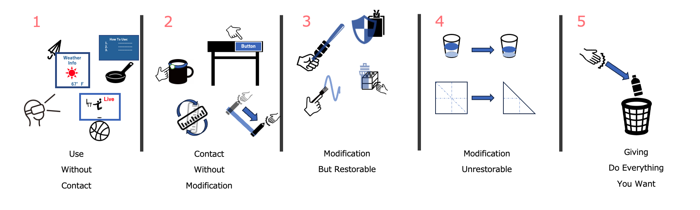

This survey asks about the relationships you have with people you share your current shared space with, such as an office or laboratory, and the everyday objects you bring into this space. Then, you will be asked under what conditions you would allow people with different relationships to interact with these objects as prompted by a Mixed Reality app. The survey will take approximately 20 minutes to complete.
In recent years, various companies have released different types of glasses-like devices called Head Mount Displays (HMD). Devices such as Microsoft's Hololens2, Meta Quest 3, and Apple Vision Pro are still fresh in our memories. The promotional videos for these devices showcase usage examples and applications designed for daily life settings like living rooms and offices. The use of such HMDs is expected to increase in the future, and in the field of Human-Computer Interaction, examples utilizing everyday objects in daily life are being presented. One such example is Tangible User Interfaces (TUI). Various examples of Tangible User Interfaces have been proposed, where virtual displays show information on everyday objects like water bottles and cushions, or where the objects themselves are used as interfaces to operate devices.
Imagine you are wearing an HMD and viewing the real world:
TUI can add functions to everyday objects that do not originally have those capabilities, by closely integrating these objects with us. However, current systems rarely consider use in shared spaces where multiple people bring in multiple objects.
In shared spaces, various objects are often borrowed and lent. Imagine yourself borrowing and lending items in a shared space:
Classroom:
Office / Laboratory:
Share House or Apartment:
Park:
As a result, these systems add virtual objects to suitable physical objects without determining who owns which objects and to what extent others are allowed to use them.
In this survey, we will ask about the types of relationships you have with the people you share your current shared space, such as an office or laboratory, and the types of everyday objects you bring into the space. After that, we will ask about the conditions under which you would allow people with different relationships to interact with the objects you bring, and to what extent you would allow actions prompted by an MR app. The actions prompted by the MR app are as follows:
Allowing people in the shared space to access your everyday objects means that interfaces showing information or allowing direct contact with the objects will be displayed. The survey will take approximately 20 minutes to complete.